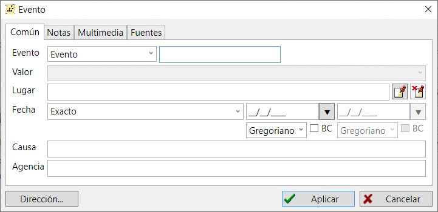

Existen dos tipos principales de registros en una base de datos genealógica: los acontecimientos y los hechos. Un hecho designa un hito en la vida de una persona o familia; por tanto, un hecho sólo puede adjuntarse a un registro de persona o familia.
Un evento tiene un tipo—puede ser uno predefinido o puede utilizar el tipo "Hecho" como tipo genérico y luego añadir un nombre de tipo definido por el usuario. Además, para un acontecimiento puedes especificar el lugar donde tuvo lugar, y una fecha o intervalo de fechas con un calendario para la(s) fecha(s). Opcionalmente puede añadir algunas notas de texto, referencia a fuentes y contenido multimedia. Para algunos eventos como la muerte no está de más especificar una razón que causó el evento y una organización certificada.
El campo "Valor" sólo es válido para eventos de tipo "Hecho". Por ejemplo, el campo "Valor" de un hecho "Rango" puede almacenar el rango que tenía una persona mientras realizaba su servicio militar. En el caso de una "Condecoración", puede almacenar el tipo de condecoración. GEDKeeper almacena todos los valores que haya introducido como "Valores" de los hechos, por lo que puede acceder rápidamente a los valores anteriores desde la lista desplegable.

Encontrará más información sobre cómo debe definir y procesar las fechas en el artículo Características especiales de las fechas.
Ver también: Persona, Familia, Fuente, Nota, Multimedia, Ubicación, Dirección.